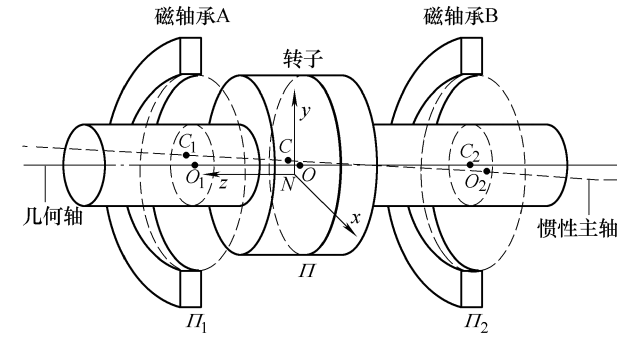
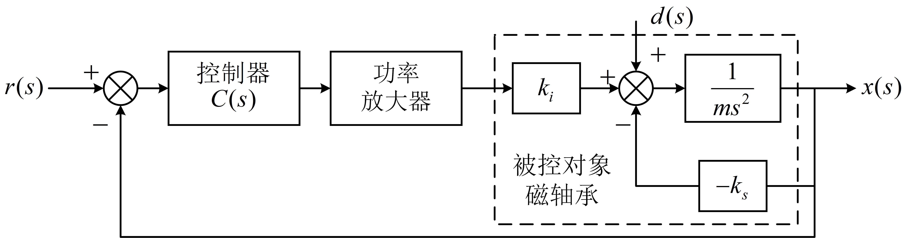
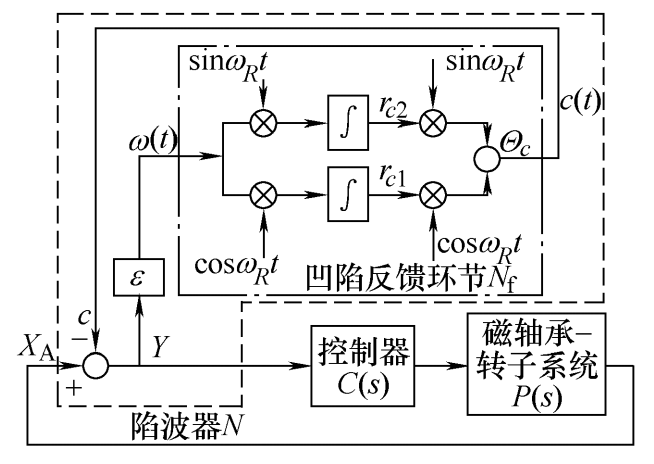
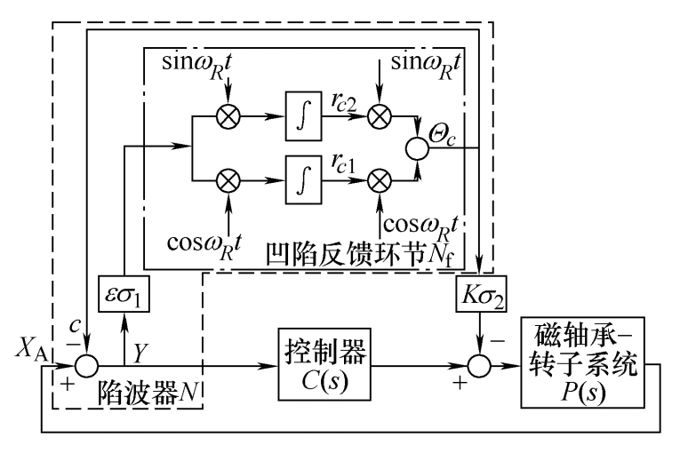
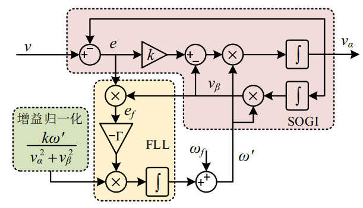
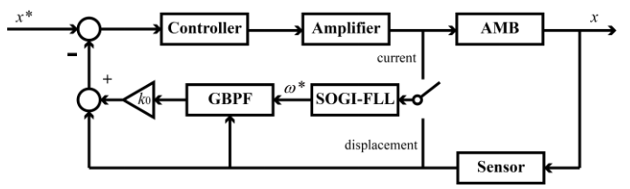

磁轴承位置控制模型¶
基于 AMB_Simulation_Lib/DisplaceLoop/displacelooppara.m
1 基本模型¶
AMB_Simulation_Lib/DisplaceLoop/Basic.slx
磁悬浮飞轮转子的不平衡振动会造成飞轮系统的基频扰动，是磁悬浮飞轮最主要的振动源。转子的不平衡是指转子的几何轴与惯性主轴不重合，而磁悬浮飞轮的工作原理是将飞轮转子悬浮于转子的几何轴，因此当飞轮绕转子几何轴旋转时，飞轮的惯性主轴就会绕几何轴转动，从而就会有离心力等扰动力与扰动力矩输出。


2 线性模型与非线性模型¶
AMB_Simulation_Lib/DisplaceLoop/Linear & Nonlinear.slx
磁悬浮轴承为典型的非线性系统，但是在分析过程中通常会对其在平衡位置进行线性化，该模型旨在对比线性模型与非线性模型。
3 零电流控制与零作用力控制¶
AMB_Simulation_Lib/DisplaceLoop/NTC_ZC_ZF.slx
磁悬浮轴承的转子承受的力在经过线性化后，主要由电流项和位移项共同决定。通过减小磁悬浮轴承上转速同频力来进行振动抑制方法主要有零电流控制与零作用力控制两种。
3.1 零电流控制¶
把ki里的正弦去掉，在控制器前（反馈通路上）加入陷波器。 在控制信号通路或者反馈回路中利用陷波器将位移信号中的同频分量去除，由于同频干扰是位移信号中频率为\omega_R的正弦量，因此可以采用中心陷波频率随转速变化的自适应陷波器对其进行去除。自适应陷波器工作原理如下图所示，陷波器N的核心是凹陷反馈环节N_f，其中心频率可依据转速变化而改变， \epsilon决定陷波器 N(s)的收敛速度和中心陷波带宽。

陷波器反馈环节N_f的传递函数为
陷波器整体的传递函数N_O为
陷波器在使用时需要考虑系统的稳定性问题，根据被控对象传递函数，在磁轴承转速高低两种情况下需要进行符号的切换。
3.2 零作用力控制¶
把ks里的正弦去掉，在电流通路上对位移引起的转速同频力进行抵消。 在控制电流中加入了对位移刚度力的补偿项，依据获得的不平衡量参数对位移刚度力中的同频量进行补偿。

补偿机构中K=K_h/K_i，为磁轴承位移刚度与电流刚度的比值。控制作用切换开关\sigma_1,\sigma_2\in\{0,1\}， \sigma_1为开闭环控制开关，用于当自适应陷波器N收敛后断开陷波器的输入，利用辨识的不平衡量参数，对位移信号中的同频量进行开环补偿；\sigma_2为位移刚度力补偿控制开关，用于控制是否对位移刚度力进行补偿。
4 转速辨识与位移振动抑制¶
AMB_Simulation_Lib/DisplaceLoop/SOGI_NTC_FARWARD
采用基于SOGI-FLL的转子频率估计法。SOGI-FLL主要包括二阶广义积分模块、锁频环模块以及增益归一化模块。其中，v_\alpha、v_\beta为SOGI的两相输出，e为 SOGI的估计误差，e_f为FLL的估计误差，\omega_f为初始触发频率， \omega^,为估计频率。

通过二阶广义积分-锁频环（SOGI-FLL）后接广义带通滤波器（GBPF）的方法从控制电流信号中提取振动频率，对其控制电流中的同频分量进行放大，对位移中的同频振动进行抵消。
